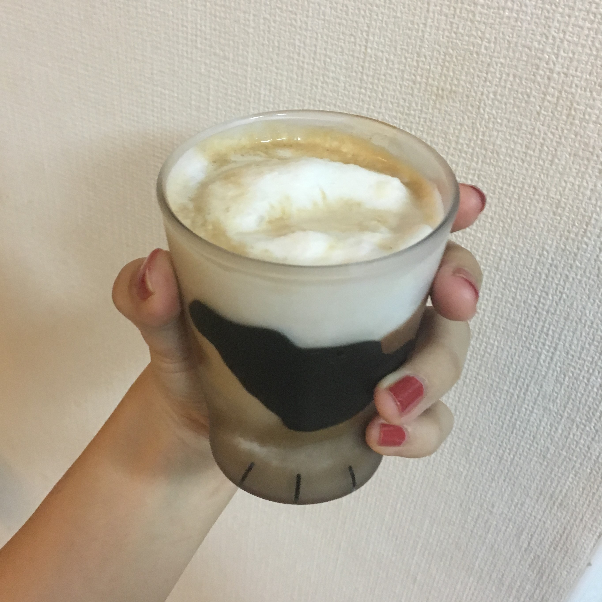
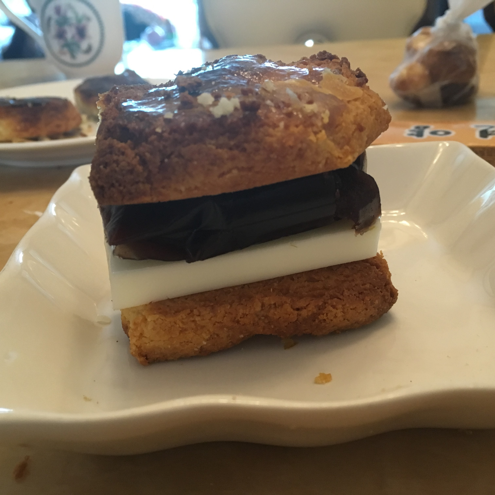
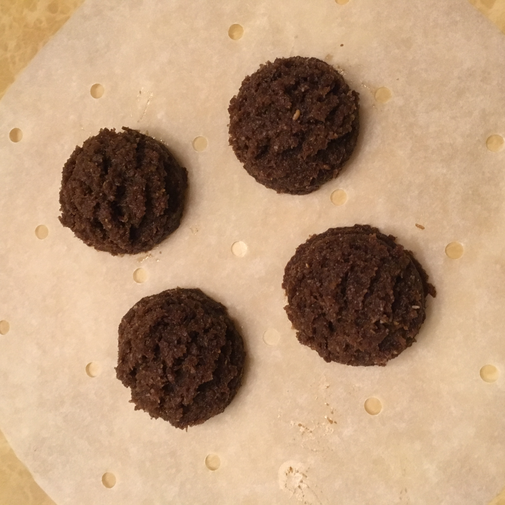

Keto menu
💡키토란?💡
키토제닉 식이요법을 위한 메뉴입니다.
체내에서 1순위로 사용되는 에너지원인 탄수화물을 최소한으로 제한하고, 단백질과 지방을 많이 섭취하여 체지방을 에너지원으로 사용하도록 하는 식단이에요.
이를 통해 효과적인 체중 감량이 가능하며, 뇌전증 환자식으로도 사용됩니다.
키토제닉 식단을 통한 다이어트를 하는 중에 카페 디저트가 너무 먹고 싶어서 저탄수화물 고지방으로 만든 메뉴에요.
밀가루와 설탕대신 코코넛가루, 아몬드가루, 에리스리톨을 이용해서 시중에 파는 것과 최대한 비슷하게 만들었어요 (ง •̀_•́)ง
| 일반식 | 키토제닉 | |
|---|---|---|
| 탄수화물 | 55~65% | 5% |
| 단백질 | 7~20% | 25% |
| 지방 | 15~30% | 70% |
🥥코코넛라떼🥥
①코코넛밀크에 에리스리톨을 졸여 연유를 만든다.
②연유, 코코넛밀크를 얼음과 함께 믹서에 간다.
③에스프레소를 넣는다.
🥮앙버터스콘🥮
①코코넛가루, 아몬드가루, 버터를 이용하여 플레인스콘을 굽는다.
②팥, 한천, 에리스리톨을 졸여 팥앙금을 만든다.
③스콘사이에 팥앙금과 버터를 끼운다.
🍨코코아 스쿱쿠키🍨
①차전자피가루, 코코넛가루, 아몬드가루에 다량의 버터를 넣고 반죽한다.
②아이스크림스쿱으로 모양을 내어 굽는다.
③버터가 많이 들어가서 구울 때 녹을 수도 있기 때문에 비율을 주의하세용
